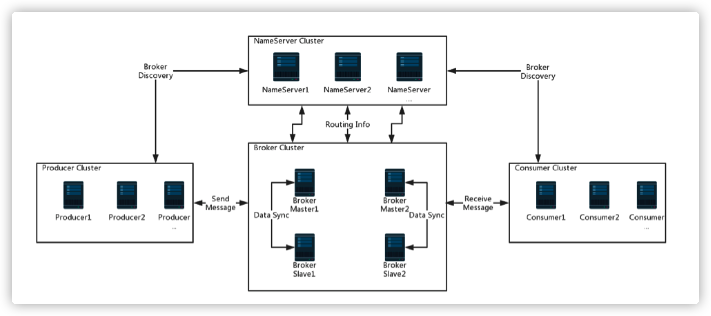
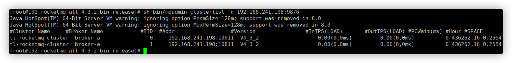

RocketMQ整体部署与快速实战
架构图

Apache RocketMQ是一个分布式消息传递和流媒体平台，具有低延迟，高性能和可靠性，万亿级容量和灵活的可伸缩性。 它由四个部分组成：
- nameserver，broker，生产者和使用者。它们中的每一个都可以水平扩展，而没有单个故障点。 如上面的屏幕截图所示。
- nameserver：提供轻量级的服务发现和路由。 每个名称服务器记录完整的路由信息，提供相应的读写服务，并支持快速的存储扩展。
- Broker：通过提供轻量级的TOPIC和QUEUE机制来存储消息。
1. RocketMQ部署
- RocketMQ加入环境变量
vim /etc/profile
### profile
# java环境变量
export JAVA_HOME=/usr/local/jdk
export CLASSPATH=.:$JAVA_HOME/lib/dt.jar:$JAVA_HOME/lib/tools.jar
export PATH=$JAVA_HOME/bin:$PATH 4
# rocketmq目录
export ROCKETMQ_HOME=/usr/local/rocketmq/rocketmq‐all‐4.1.0‐incubating
export PATH=$ROCKETMQ_HOME/bin:$PATH
- 刷新环境变量
source /etc/profile
- 修改配置文件
vim /usr/local/rocketmq/conf/broker.conf
### broker.conf
# 集群名称，可自定义
brokerClusterName=DefaultCluster
brokerName=broker‐a
brokerId=0
# 定义服务地址，主存地址
namesrvAddr=192.168.241.198:9876
deleteWhen=04
fileReservedTime=48
brokerRole=ASYNC_MASTER
flushDiskType=ASYNC_FLUSH
autoCreateTopicEnable=true
# 消息存储根路径
storePathRootDir=/data/rocketmq/store
# 日志路径
storePathCommitLog=/data/rocketmq/store/commitlog
注
机器内存不够（一般针对虚拟机），需要修改JAVA_OPT关于内存的设置
- runserver.sh
vim /usr/local/rocketmq/bin/runserver.sh #!/bin/sh # Licensed to the Apache Software Foundation (ASF) under one or more # contributor license agreements. See the NOTICE file distributed with # this work for additional information regarding copyright ownership. # The ASF licenses this file to You under the Apache License, Version 2.0 # (the "License"); you may not use this file except in compliance with # the License. You may obtain a copy of the License at # # http://www.apache.org/licenses/LICENSE‐2.0 # # Unless required by applicable law or agreed to in writing, software # distributed under the License is distributed on an "AS IS" BASIS, # WITHOUT WARRANTIES OR CONDITIONS OF ANY KIND, either express or implied. # See the License for the specific language governing permissions and # limitations under the License. #======================================================================= # Java Environment Setting #======================================================================= error_exit () { echo "ERROR: $1 !!" exit 1 } [ ! ‐e "$JAVA_HOME/bin/java" ] && JAVA_HOME=$HOME/jdk/java [ ! ‐e "$JAVA_HOME/bin/java" ] && JAVA_HOME=/usr/java [ ! ‐e "$JAVA_HOME/bin/java" ] && error_exit "Please set the JAVA_HOME v ariable in your environment, We need java(x64)!" export JAVA_HOME export JAVA="$JAVA_HOME/bin/java" export BASE_DIR=$(dirname $0)/.. export CLASSPATH=.:${BASE_DIR}/conf:${CLASSPATH} #======================================================================= # JVM Configuration #======================================================================= #修改此处的内存大小，默认为4g，一般我们的虚拟机内存不会太大 #所以此处修改为256m，可以根据自己机器的配置合理设置 JAVA_OPT="${JAVA_OPT} ‐server ‐Xms256m ‐Xmx256m ‐Xmn128m ‐XX:MetaspaceSi ze=64m ‐XX:MaxMetaspaceSize=128m" JAVA_OPT="${JAVA_OPT} ‐XX:+UseConcMarkSweepGC ‐XX:+UseCMSCompactAtFullCo llection ‐XX:CMSInitiatingOccupancyFraction=70 ‐XX:+CMSParallelRemarkEnable d ‐XX:SoftRefLRUPolicyMSPerMB=0 ‐XX:+CMSClassUnloadingEnabled ‐XX:SurvivorR atio=8 ‐XX:‐UseParNewGC" JAVA_OPT="${JAVA_OPT} ‐verbose:gc ‐Xloggc:/dev/shm/rmq_srv_gc.log ‐XX:+PrintGCDetails" JAVA_OPT="${JAVA_OPT} ‐XX:‐OmitStackTraceInFastThrow" JAVA_OPT="${JAVA_OPT} ‐XX:‐UseLargePages" JAVA_OPT="${JAVA_OPT} ‐Djava.ext.dirs=${JAVA_HOME}/jre/lib/ext:${BASE_DI R}/lib" #JAVA_OPT="${JAVA_OPT} ‐Xdebug ‐Xrunjdwp:transport=dt_socket,address=9555,server=y,suspend=n" JAVA_OPT="${JAVA_OPT} ${JAVA_OPT_EXT}" JAVA_OPT="${JAVA_OPT} ‐cp ${CLASSPATH}" $JAVA ${JAVA_OPT} $@
- runbroker.sh
vim /usr/local/rocketmq/bin/runbroker.sh #!/bin/sh # Licensed to the Apache Software Foundation (ASF) under one or more # contributor license agreements. See the NOTICE file distributed with # this work for additional information regarding copyright ownership. # The ASF licenses this file to You under the Apache License, Version 2.0 # (the "License"); you may not use this file except in compliance with # the License. You may obtain a copy of the License at # # http://www.apache.org/licenses/LICENSE‐2.0 # # Unless required by applicable law or agreed to in writing, software # distributed under the License is distributed on an "AS IS" BASIS, # WITHOUT WARRANTIES OR CONDITIONS OF ANY KIND, either express or implied. # See the License for the specific language governing permissions and # limitations under the License. #======================================================================= # Java Environment Setting #======================================================================= error_exit () { echo "ERROR: $1 !!" exit 1 } [ ! ‐e "$JAVA_HOME/bin/java" ] && JAVA_HOME=$HOME/jdk/java [ ! ‐e "$JAVA_HOME/bin/java" ] && JAVA_HOME=/usr/java [ ! ‐e "$JAVA_HOME/bin/java" ] && error_exit "Please set the JAVA_HOME v ariable in your environment, We need java(x64)!" export JAVA_HOME export JAVA="$JAVA_HOME/bin/java" export BASE_DIR=$(dirname $0)/.. export CLASSPATH=.:${BASE_DIR}/conf:${CLASSPATH} #======================================================================= # JVM Configuration #======================================================================= # 默认需要内存大小为8g JAVA_OPT="${JAVA_OPT} ‐server ‐Xms256m ‐Xmx256m ‐Xmn128m" JAVA_OPT="${JAVA_OPT} ‐XX:+UseG1GC ‐XX:G1HeapRegionSize=16m ‐XX:G1Reserv ePercent=25 ‐XX:InitiatingHeapOccupancyPercent=30 ‐XX:SoftRefLRUPolicyMSPer MB=0" JAVA_OPT="${JAVA_OPT} ‐verbose:gc ‐Xloggc:/dev/shm/mq_gc_%p.log ‐XX:+Pri ntGCDetails ‐XX:+PrintGCDateStamps ‐XX:+PrintGCApplicationStoppedTime ‐XX:+ PrintAdaptiveSizePolicy" JAVA_OPT="${JAVA_OPT} ‐XX:+UseGCLogFileRotation ‐XX:NumberOfGCLogFiles=5 ‐XX:GCLogFileSize=30m" JAVA_OPT="${JAVA_OPT} ‐XX:‐OmitStackTraceInFastThrow" JAVA_OPT="${JAVA_OPT} ‐XX:+AlwaysPreTouch" JAVA_OPT="${JAVA_OPT} ‐XX:MaxDirectMemorySize=15g" JAVA_OPT="${JAVA_OPT} ‐XX:‐UseLargePages ‐XX:‐UseBiasedLocking" JAVA_OPT="${JAVA_OPT} ‐Djava.ext.dirs=${JAVA_HOME}/jre/lib/ext:${BASE_DI R}/lib" #JAVA_OPT="${JAVA_OPT} ‐Xdebug ‐Xrunjdwp:transport=dt_socket,address=9555,server=y,suspend=n" JAVA_OPT="${JAVA_OPT} ${JAVA_OPT_EXT}" JAVA_OPT="${JAVA_OPT} ‐cp ${CLASSPATH}" numactl ‐‐interleave=all pwd > /dev/null 2>&1 if [ $? ‐eq 0 ] then if [ ‐z "$RMQ_NUMA_NODE" ] ; then numactl ‐‐interleave=all $JAVA ${JAVA_OPT} $@ else numactl AVA_OPT} $@ ‐‐cpunodebind=$RMQ_NUMA_NODE ‐‐membind=$RMQ_NUMA_NODE $JAVA ${JAVA_OPT} $@ fi else $JAVA ${JAVA_OPT} $@ fi
- 假设我们的IP是：192.168.241.198，修改配置文件
vim broker.conf
### 加上
brokerIP1=192.168.241.198
- 运行服务namesrv，需在
$ROCKETMQ_HOME/bin下执行
nohup sh bin/mqnamesrv ‐n 192.168.241.198:9876 &
- 启动broker，需在
$ROCKETMQ_HOME/bin下执行
# 不指定启动配置文件
nohup sh bin/mqbroker ‐n 192.168.241.198:9876 autoCreateTopicEnable=true &
# 指定启动配置配置文件
# 192.168.241.198:9876为nameserver，链接进行注册，autoCreateTopicEnable=true(允许创建topic)
nohup sh bin/mqbroker & ‐n 192.168.241.198:9876 ‐c conf/broker.conf autoCreateTopicEnable=true
# 查看broker启动配置：
sh bin/mqbroker ‐m
关闭防火墙
客户端访问可能会出现的问题：RemotingTooMuchRequestException: sendDefaultImpl call timeout。在客户端运行Producer时，可能会出现如上异常，这是因为从 Windows 上开发连接虚拟机中的 nameServer 时要经过 Linux 系统的防火墙，而防火墙一般都会有超时的机制，在网络连接长时间不传输数据时，会关闭这个 TCP 的会话，关闭后再读写，就有可能导致这个异常。
# 停止firewall
systemctl stop firewalld.service
# 禁止firewall开机启动
systemctl disable firewalld.service
# 查看默认防火墙状态（关闭后显示notrunning，开启后显示running）
firewall‐cmd ‐‐state
broker.conf配置如下
# rocketmq‐name服务地址，多个地址用;分开，不配置默认为localhost:9876
namesrvAddr = 192.168.241.198:9876
brokerClusterName = DefaultCluster
brokerName = broker‐a
brokerId = 0
deleteWhen = 04
fileReservedTime = 48
# 主从角色SYNC_MASTER,ASYNC_MASTER,SLAVE
brokerRole = SYNC_MASTER
flushDiskType = ASYNC_FLUSH
# 允许自动创建主题topic
autoCreateTopicEnable=true
#broker监听端口
listenPort=10911
# 数据存储位置
storePathRootDir=/root/rocketmq/store
- 关闭命令
### 方案一：正常退出
# 关闭broker
sh mqshutdown broker
# 关闭namesrv
sh mqshutdown namesrv
### 方案二：杀掉进程
# 查看pid(进程号)
ps ‐ef|grep rocketmq
kill ‐9 pid
2. RocketMQ多机集群部署
准备2个虚拟机分别是虚拟机centos-node-01与centos-node-02，分别部署2个NameServer，并在每台机器上分别启动一个Master和一个Slave，互为主备，在主目录下的conf文件夹下提供了多种broker配置模式，分别有：2m-2s-async，2m-2s-sync，2m-noslave，可以以此为模版做如下配置：
cd /${conf目录}
cp broker.conf broker-m.conf
cp broker.conf broker-s.conf
配置192.168.241.198 Master和Slave
Master broker-m.conf 配置：
# rocketmq‐name服务地址，多个地址用;分开，不配置默认为localhost:9876
namesrvAddr = 192.168.241.198:9876;192.168.241.199:9876
# 可以配置成自己需要的名称
brokerClusterName = DefaultCluster
brokerName = broker‐b
# 0表示主节点
brokerId = 0
deleteWhen = 04
fileReservedTime = 48
# 当前节点角色
brokerRole = SYNC_MASTER
flushDiskType = ASYNC_FLUSH
autoCreateTopicEnable = true
#broker通信端口，默认端口
listenPort=10911
storePathRootDir=/root/rocketmq/store‐m
Slave broker-s.conf 配置：
# rocketmq‐name 服务地址，多个地址用;分开，不配置默认为localhost:9876
namesrvAddr = 192.168.241.198:9876;192.168.241.199:9876
# 可以配置成自己需要的名称
brokerClusterName = DefaultCluster
brokerName = broker‐b
# 非0表示从节点
brokerId = 1
deleteWhen = 04
fileReservedTime = 48
# 当前节点角色
brokerRole = SLAVE
flushDiskType = ASYNC_FLUSH
autoCreateTopicEnable=true
# broker通信端口
listenPort=10811
storePathRootDir=/root/rocketmq/store‐s
- 启动mqnamesrv
nohup sh mqnamesrv &
- 启动broker Master
# 到rocketmq根目录执行命令
cd /${ROCKETMQ_ROOT}
nohup sh bin/mqbroker ‐c conf/broker‐m.conf &
- 启动broker Slave
# 到rocketmq根目录执行命令
cd /${ROCKETMQ_ROOT}
nohup sh bin/mqbroker ‐c conf/broker‐s.conf &
- 配置192.168.241.199 Master和Slave
Master broker-m.conf 配置：
namesrvAddr = 192.168.241.198:9876;192.168.241.199:9876
# 可以配置成自己需要的名称
brokerClusterName = DefaultCluster
brokerName = broker‐a
brokerId = 0
deleteWhen = 04
fileReservedTime = 48
brokerRole = SYNC_MASTER
flushDiskType = ASYNC_FLUSH
autoCreateTopicEnable=true
listenPort=10911
storePathRootDir=/root/rocketmq/store‐m
slave broker-s.conf 配置：
namesrvAddr = 192.168.241.198:9876;192.168.241.199:9876
# 可以配置成自己需要的名称
brokerClusterName = DefaultCluster
brokerName = broker‐a
brokerId = 1
deleteWhen = 04
fileReservedTime = 48
brokerRole = SLAVE
flushDiskType = ASYNC_FLUSH
autoCreateTopicEnable=true
listenPort=10811
storePathRootDir=/root/rocketmq/store‐s
启动mqnamesrv 与 mqbroker 启动流程同上。
集群启动后，查看集群监控状态
sh mqadmin clusterlist ‐n 192.168.241.198:9876

- 测试
export NAMESRV_ADDR=192.168.241.198:9876;192.168.241.199:9876
# 测试发送端
sh bin/tools.sh org.apache.rocketmq.example.quickstart.Producer
# 测试消费端
sh bin/tools.sh org.apache.rocketmq.example.quickstart.Consumer
配置说明
1.namesrvAddr NameServer地址，可以配置多个，用逗号分隔； 2.brokerClusterName 所属集群名称，如果节点较多可以配置多个 3.brokerName broker名称，master和slave使用相同的名称，表明他们的主从关系 4.brokerId 0表示Master，大于0表示不同的slave 5.deleteWhen 表示几点做消息删除动作，默认是凌晨4点 6.fileReservedTime 在磁盘上保留消息的时长，单位是小时 7.brokerRole 有三个值：SYNC_MASTER，ASYNC_MASTER，SLAVE；同步和异步表示Master和Slave之间 同步数据的机制； 8.flushDiskType 刷盘策略，取值为：ASYNC_FLUSH，SYNC_FLUSH表示同步刷盘和异步刷盘；SYNC_FLUSH消 息写入磁盘后才返回成功状态，ASYNC_FLUSH不需要； 9.listenPort 启动监听的端口号 10.storePathRootDir 存储消息的根目录
3. Docker多机集群部署
假设有2台服务器，IP分别为 10.211.55.9 和 10.211.55.10
3.1 编译镜像
下载源码，并将源码复制到2台服务器上
进入源码文件夹
cd /${PATH_TO_SOURCE}/image-build
- 编译镜像
# 此处选择的是RocketMQ版本号为4.5.0，并且基于centos镜像进行编译
./build-image.sh 4.5.0 centos
注意
查看Dockerfile-centos文件的第50行可以看到，默认是从apache主站进行下载，如果下载速度慢，可以将下载地址改为清华镜像：
https://mirrors.tuna.tsinghua.edu.cn/apache/rocketmq/${ROCKETMQ_VERSION}/rocketmq-all-${ROCKETMQ_VERSION}-bin-release.zip
- 查看镜像
docker image ls
# 可以看到 apacherocketmq/rocketma:4.5.0 镜像
3.2 配置文件
下面以 10.211.55.9 服务器的配置文件为例：
docker-compose.yml
其中的name server地址需要填写宿主机的IP，而不是docker容器的IP
version: '3.5'
services:
rmq-ns:
image: apacherocketmq/rocketmq:4.5.0
container_name: rmq-ns
ports:
- 9876:9876
volumes:
- /etc/localtime:/etc/localtime
- /usr/local/tyrival/rocketmq/logs/nameserver:/opt/logs
- /usr/local/tyrival/rocketmq/store/nameserver:/opt/store
command: sh mqnamesrv
networks:
rmq:
aliases:
- rmq-ns
rmq-broker-m:
image: apacherocketmq/rocketmq:4.5.0
container_name: rmq-broker-m
ports:
- 10911:10911
volumes:
- /etc/localtime:/etc/localtime
- /usr/local/tyrival/rocketmq/logs/broker-1:/opt/logs
- /usr/local/tyrival/rocketmq/store/broker-1:/opt/store
- /usr/local/tyrival/rocketmq/conf/broker-1.conf:/opt/rocketmq-4.5.0/conf/broker.conf
environment:
TZ: Asia/Shanghai
NAMESRV_ADDR: "10.211.55.9:9876;10.211.55.10:9876"
JAVA_OPTS: " -Duser.home=/opt"
JAVA_OPT_EXT: "-server -Xms256m -Xmx256m -Xmn256m"
command: sh mqbroker -c /opt/rocketmq-4.5.0/conf/broker.conf autoCreateTopicEnable=true &
links:
- rmq-ns:rmq-ns
networks:
rmq:
aliases:
- rmq-broker-m
rmq-broker-s:
image: apacherocketmq/rocketmq:4.5.0
container_name: rmq-broker-s
ports:
- 10909:10909
volumes:
- /etc/localtime:/etc/localtime
- /usr/local/tyrival/rocketmq/logs/broker-2:/opt/logs
- /usr/local/tyrival/rocketmq/store/broker-2:/opt/store
- /usr/local/tyrival/rocketmq/conf/broker-2.conf:/opt/rocketmq-4.5.0/conf/broker.conf
environment:
TZ: Asia/Shanghai
NAMESRV_ADDR: "10.211.55.9:9876;10.211.55.10:9876"
JAVA_OPTS: " -Duser.home=/opt"
JAVA_OPT_EXT: "-server -Xms256m -Xmx256m -Xmn256m"
command: sh mqbroker -c /opt/rocketmq-4.5.0/conf/broker.conf autoCreateTopicEnable=true &
links:
- rmq-ns:rmq-ns
networks:
rmq:
aliases:
- rmq-broker-s
rmq-console:
image: styletang/rocketmq-console-ng
container_name: rmq-console
ports:
- 10900:8080
environment:
JAVA_OPTS: -Drocketmq.namesrv.addr=10.211.55.9:9876;10.211.55.10:9876 -Dcom.rocketmq.sendMessageWithVIPChannel=false
networks:
rmq:
aliases:
- rmq-console
networks:
rmq:
name: rmq
driver: bridge
注意
可以看到除了配置rocketmq容器外，还配置了基于镜像
styletang/rocketmq-console-ng的 rmq-console 容器，这是一个rocketmq的集群管理应用。
- broker-1.conf
# 集群名称
brokerClusterName = rocketmq-cluster
# broke名
brokerName = broker-a-master
# master用0，slave用其他
brokerId = 0
# 这里要写宿主机的IP，否则rocketmq会自动获取docker容器IP
brokerIP1 = 10.211.55.9
# 清理时机
deleteWhen = 04
# 文件保留48小时
fileReservedTime = 48
# 同步模式
# -SYNC_MASTER 同步双写
# -ASYNC_MASTER 异步复制
# -SLAVE
brokerRole = SYNC_MASTER
# 刷盘模式
# -SYNC_FLUSH 同步刷盘
# -ASYNC_FLUSH 异步刷盘
flushDiskType = SYNC_FLUSH
# NamsServer地址
namesrvAddr = 10.211.55.9:9876;10.211.55.10:9876
# 允许自动创建topic
autoCreateTopicEnable = true
# broker对外服务的监听端口
listenPort = 10911
- broker-2.conf
brokerClusterName = rocketmq-cluster
brokerName = broker-b-slave
brokerId = 1
brokerIP1 = 10.211.55.9
deleteWhen = 04
fileReservedTime = 48
brokerRole = SLAVE
flushDiskType = SYNC_FLUSH
namesrvAddr = 10.211.55.9:9876;10.211.55.10:9876
autoCreateTopicEnable = true
listenPort = 10909
注意
10.211.55.10 服务器上，需要对2个broke.conf文件进行修改，将其中的 brokerIP1 修改为 0.211.55.10。
3.3 启动集群
启动集群
启动时会自动下载
styletang/rocketmq-console-ng镜像。
docker-compose up -d
查看集群
浏览器访问：http://10.211.55.9:10900 ，可以看到 rmq-console 提供的集群管理页面，通过此站点可以监控集群状态。